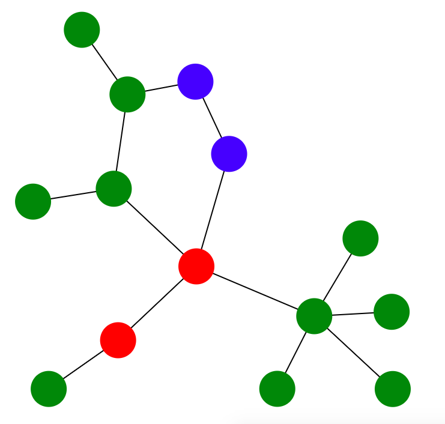
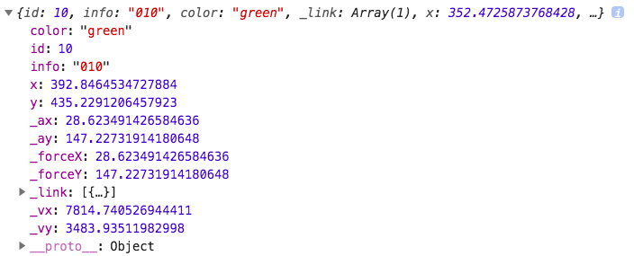
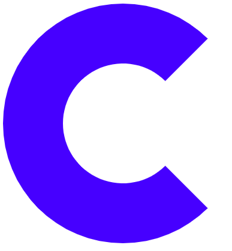
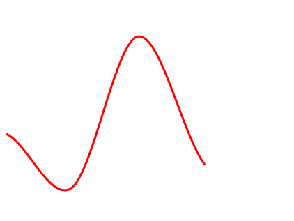

<!DOCTYPE html>
<html lang="zh-cn">

<head>
    <meta charset="UTF-8">
    <meta name="viewport" content="width=device-width, initial-scale=1.0">
    <meta http-equiv="X-UA-Compatible" content="ie=edge">
    <link rel="shortcut icon" href="../images/clay.png" type="image/x-png">
    <title>clay - 文档</title>
    <link rel="stylesheet" href="../easycss-1.2.1.min.css">
    <link rel="stylesheet" href="../style.css">
    <link rel="stylesheet" href="./style.css">
    <script>
        function goto(target) {
            window.location.href = '#' + target;
        }
    </script>
</head>

<body>
    <header id='top'>
        clay v1.2.1
        <ul>
            <li>
                <a href="../index.html">首页</a>
            </li>
            <li>
                <a href="../examples/index.html">实例</a>
            </li>
            <li>
                <a href="./index.html" class='click'>文档</a>
            </li>
            <li>
                <a href="../aboutUs.html">加入我们</a>
            </li>
        </ul>
        <a href="https://github.com/yelloxing/clay" class="github">
            Fork me on GitHub
        </a>
    </header>
    <section>
        <ul>
            <li onclick='goto("characteristic")'>特色</li>
            <li onclick='goto("grammar")'>语法</li>
            <li onclick='goto("node")'>基本的结点操作</li>
            <li onclick='goto("node-search")' class='blank'>结点查找</li>
            <li onclick='goto("node-modify")' class='blank'>结点编辑</li>
            <li onclick='goto("node-data")' class='blank'>数据与结点</li>
            <li onclick='goto("tool")'>工具类</li>
            <li onclick='goto("tool-animation")' class='blank'>轮播方法</li>
            <li onclick='goto("tool-color")' class='blank'>色彩</li>
            <li onclick='goto("tool-max-min")' class='blank'>最大值和最小值</li>
            <li onclick='goto("mathematics")'>数学计算</li>
            <li onclick='goto("mathematics-hermite")' class='blank'>Hermite三次插值</li>
            <li onclick='goto("mathematics-cardinal")' class='blank'>Cardinal三次插值</li>
            <li onclick='goto("mathematics-move")' class='blank'>移动变换</li>
            <li onclick='goto("mathematics-scale")' class='blank'>缩放变换</li>
            <li onclick='goto("mathematics-rotate")' class='blank'>旋转变换</li>
            <li onclick='goto("layout")'>布局</li>
            <li onclick='goto("layout-force")' class='blank'>力布局</li>
            <li onclick='goto("svg")'>SVG绘图</li>
            <li onclick='goto("svg-arc")' class='blank'>扇形</li>
            <li onclick='goto("svg-line")' class='blank'>曲线</li>
            <li onclick='goto("canvas2d")'>Canvas2D绘图</li>
            <li onclick='goto("canvas2d-arc")' class='blank'>扇形</li>
            <li onclick='goto("canvas2d-line")' class='blank'>曲线</li>
        </ul>
        <article>
            <h1>
                clay - 提供更友好的数据可视化解决方案
            </h1>
            <p>
                通过提供一些基础的计算方法和绘图API，包括常用布局计算等接口，在不降低灵活性的前提下大大减小数据可视化实现的难度，便是我们的目的。
            </p>
            <p>
                如果通过使用clay，可以帮助你更快速的实现自己的创意，那caly的存在便充满了意义，祝你好运。
            </p>
            <h2 id='characteristic'>
                特色
            </h2>
            <ul>
                <li>完全自由的API设计，没有任何强制条件</li>
                <li>由于提供的只是基础接口，库文件本身非常小</li>
                <li>遵循MIT协议自由开源</li>
                <li>接口稳定，不同版本的升级，针对已有接口，只是性能优化</li>
                <li>跨浏览器实现</li>
            </ul>
            <h2 id='grammar'>
                语法
            </h2>
            <p>
                调用方式采用了链式调用的设计（部分工具类方法除外），可以分为二类。
            </p>
            <ul class='inner'>
                <li>
                    第一类：结点集合对象（也就是clay对象），调用返回的对象和原来的对象是二个对象；
                </li>
                <li>
                    第二类：非结点集合对象，调用返回的对象和原来的对象是同一个对象。
                </li>
            </ul>
            <p>
                请务必记住这二个区别，第二类返回和原来同一个对象的原因是在有些情况下，需要返回计算结果，可是传递新的参数获取的新对象也需要保留，就直接通过新旧对象一致实现了。
            </p>
            <h2 id='node'>
                基本的结点操作
            </h2>
            <p>
                关于结点的操作只提供非常必要的接口，这些接口已经可以满足日常工作需要；结点操作部分更核心的是数据和结点绑定问题，是为了方便数据到图形的操作，可以在
                <a href='../examples/index.html'>【实例】</a>
                中体会。
            </p>
            <h3 id='node-search'>
                结点查找
            </h3>
            <p>
                传递一个类似CSS选择器的字符串、结点或结点集合可以返回一个维护了很多结点的clay对象，这个过程就被称为结点查找，关于结点的操作都被挂载在这个clay对象上。
            </p>
            <pre class="code">var lis=clay('li.item');</pre>
            <p>
                上面通过传递一个选择器获取到了页面上所有class包含item的li结点。
            </p>
            <p id='selector'>
                传递的选择器目前包括下面几类：
            </p>
            <ul class='inner'>
                <li>
                    第一类：id选择器、class选择器、属性选择器和元素选择器；
                </li>
                <li>
                    第二类：以上选择器的任意组合（元素选择器最多一个，且必须在开头出现）；
                </li>
                <li>
                    第三类：传递字符串*会查找全部元素；
                </li>
                <li>
                    第四类：标签字符串，比如&lt;circle&gt;，标签的命名路径会自动获取，返回第一个结点。
                </li>
            </ul>
            <p>
                当然，如果不想在全局查找，可以传递第二个参数（类型是DOM结点）来规定查找上下文。
            </p>
            <span class="warn">
                温馨提示：需要注意的是，如果选择器字符串中存在id选择器，自动在全局查找，下同。
            </span>
            <pre class="code">var btns=lis.find('input[type="submit"]');</pre>
            <p>
                对于clay对象，可以调用find方法，把clay对象中维护的第一个结点作为上下文进行查找。
            </p>
            <pre class="code">var btn=btns.eq(2);</pre>
            <p>
                调用eq方法，比如上例，可以指定返回的clay对象维护的是第3个结点。
            </p>
            <h3 id='node-modify'>
                结点编辑
            </h3>
            <p>
                如果想操作clay对象中维护的结点，可以直接调用提供的兼容方法，部分接口是特定为了绘图而设计。
            </p>
            <pre class="code">btns.remove();</pre>
            <p>
                该方法用于在页面上删除btns中维护的全部结点。
            </p>
            <pre class="code" id='appendTo'>lis.appendTo('ul');</pre>
            <p>
                该方法会把lis维护的全部结点添加到所有指定元素的（这里是ul标签）内部结尾，这里查找元素的参数可以是任意一个之前提到的
                <a href="#selector">【合法选择器】</a>。
            </p>
            <p>
                上面二个都属于普通的元素操作，下面需要说明的是和下面一小节
                <a href="#node-data">【数据与结点】</a>
                有关的操作，主要为了简化绘图时的一些麻烦而特意设计的。
            </p>
            <pre class="code">$$('path').attr('stroke','red');</pre>
            <p>
                设置或获取属性值，上面的例子是设置path标签的轮廓线为红色，如果没有传递参数就是或许。
            </p>
            <p>
                除此之外，第二个参数还可以是一个函数，表示设置属性，函数的返回值作为属性新的值；该函数有二个参数，第一个参数是
                <a href="#node-data">【结点绑定】</a>
                的值，第二个参数代表clay对象中的序号，从0开始。
            </p>
            <pre class="code">$$('footer').css('font-size','16px');//$$是clay的简写，二者是等价的</pre>
            <p>
                与attr方法类似，除了普通的设置和获取样式值，第二个参数同样可以是一个函数，同上。
            </p>
            <p>
                设置的时候，你还可以传递一个JSON来设置多个值：
            </p>
            <pre class="code">
$$('footer').css({
    "height":"1rem",
    "width":"100%"
});</pre>
            <p>
                同样的，此刻你依旧可以传递一个函数，函数有四个参数，分别代表：结点绑定的数据、编号、样式名称和样式值，返回的值作为新的样式值。
            </p>
            <h3 id='node-data'>
                数据与结点
            </h3>
            <p>
                通过把数据和结点关联起来，比如在绘制饼状图的时候，每一个扇形的绘制或获取某个扇形对应的数据的时候只需要操作对应结点就可以了，在数据非常多的情况是有益的，大大减低了实现的复杂度。
            </p>
            <pre class="code">$$('path').datum(10);</pre>
            <p>
                上面语句是把查找到的所有path标签绑定数据为10，当然也可以再传递一个函数作为第二个函数，传递的函数有一个参数，此处该参数的值就是10，函数的返回值将作为结点绑定的值。
            </p>
            <p>
                如果什么参数都不传递，将返回维护的第一个结点绑定的数据。
            </p>
            <pre class="code">var updates=$$('path').data([10,9,4,8]);</pre>
            <p>
                该方法和datum类似，不同的是其用于把一组数据绑定到一组结点或返回一组结点数据，比如这里是把10、9、4和8分别绑定到查找到的第一个path、第二个path，以此类推。
            </p>
            <p>
                很容易想到，需要绑定的数据和维护的结点个数不一定是相同的，这就存在一个问题：如何去平衡二者？答案就是接下来要说明的二个方法。
            </p>
            <pre class="code">var enters=updates.enter('path');</pre>
            <p>
                把过滤出来多于结点的数据部分变成结点返回，需要传递一个字符串来标明新创建元素是什么。
            </p>
            <p>
                用上面的例子解释：如果维护的结点个数少于数据个数，就会返回维护了由那些多余数据绑定到的path结点的clay对象，如果需要，使用前面提到的
                <a href="#appendTo">【appendTo】</a>
                方法挂载到页面去，这样就平衡了。
            </p>
            <pre class="code">var exits=updates.exit();</pre>
            <p>
                过滤出来多于数据的结点部分返回。
            </p>
            <h2 id='tool'>
                工具类
            </h2>
            <p>
                主要是绘图时可能用到的一些零碎方法，所有不方便分类的方法都被归结到此处，因此可能会有点杂乱。
            </p>
            <h3 id='tool-animation'>
                轮播方法
            </h3>
            <pre class="code">
$$.animation(function(deep){
    //不断调用，deep代表进度，0-1
},200,function(){
    //动画结束时调用
});</pre>
            <h3 id='tool-color'>
                色彩
            </h3>
            <pre class="code">var formatColor=clay.color('#f00');</pre>
            <p>
                把任意合法的颜色值转变成rgba(x,x,x,x)格式，返回数字数组[r,g,b,a]，比如上面的例子返回值：[255, 0, 0, 1]。
            </p>
            <pre class="code">var colors=clay.getColors(4);</pre>
            <p>
                有时候绘图的时候，希望用不同的色彩来区分不同的内容，上面的例子就是返回四种不同的随机颜色。
            </p>
            <h3 id='tool-max-min'>
                最大值和最小值
            </h3>
            <pre class="code">var data=[3,5,3,8,2,19],min=clay.min(data),max=clay.max(data);</pre>
            <p>
                分别用于返回数组最大值和最小值。
            </p>
            <p>
                除此之外，这二个方法都支持第二个参数，传递一个函数，传递的函数有二个参数，分别表示元素值和对应索引，函数返回一个数字表示该元素用于比较的值是多少，当然，最终返回的最大值或最小值依旧是原元素值。
            </p>
            <h2 id='mathematics'>
                数学计算
            </h2>
            <p>
                主要是针对比较麻烦的数学计算对外提供接口，为的是最大程度的不限制灵活度，即使所有的图形接口都无益于图形的绘制，依旧可以借助这里提供的计算方法大大提高开发效率。
            </p>
            <h3 id='mathematics-hermite'>
                Hermite三次插值
            </h3>
            <pre class="code">
var hermite=clay.math.hermite()
    //设置张弛系数,用于控制回归曲线是比较陡峭还是更平缓，应该在点的位置设置前设置
    .setU(-1)
    //设置点的位置，前四个参数代表二个点的位置，最后二个参数代表前二个点处的斜率
    .setP(-1,0,1,2,3,3);</pre>
            <p>
                像这样子，返回的hermite就是对这二个点获得的插值函数。
            </p>
            <pre class="code">var y=hermite(0.5);//返回1.125</pre>
            <p>
                上面返回的就是在x=0.5处插入的点y值应该是1.125。
            </p>
            <h3 id='mathematics-cardinal'>
                Cardinal三次插值
            </h3>
            <pre class="code">
var cardinal=clay.math.cardinal()
    //设置张弛系数
    .setU(1)
    //设置点的位置，参数格式：[[x,y],[x,y],...]，至少二个点
    .setP([[-1,0],[0,1],[1,2]]);</pre>
            <p>
                根据多个点，获取一个插值函数。
            </p>
            <h3 id='mathematics-move'>
                移动变换
            </h3>
            <pre class="code">
var move=clay.math.move()
    //设置点最初的位置
    .setP(1,0)
    //设置移动方向
    .setD(1,1);</pre>
            <p>
                上面获取的是一个把点（1，0）作为起点，沿着（1，1）方向移动的位移函数（移动方向可以随时改变）。
            </p>
            <pre class="code">var xy=move(1);// [1.7071067811865475, 0.7071067811865475, 0]</pre>
            <p>
                这样就可以获取点移动距离1后的位置。
            </p>
            <span class="warn">
                返回的值分别代表x,y,z的大小，因为变换系列（包括缩放和旋转）计算的是三维空间，不传递默认0，下同。
            </span>
            <p>
                返回的move移动函数还支持第二个参数传入一个boolean值，表示是否把这次移动后位置标记为下次移动开始位置。
            </p>
            <pre class="code">var xy1f=move(1),xy2f=move(1);//xy1f=xy2f=[1.7071067811865475, 0.7071067811865475, 0];</pre>
            <pre class="code">var xy1t=move(1,true),xy2t=move(1);//xy1t!=xy2t,xy2t=[2.414213562373095, 1.414213562373095, 0];</pre>
            <h3 id='mathematics-scale'>
                缩放变换
            </h3>
            <pre class="code">
var scale=clay.math.scale()
    //设置缩放中心
    .setC(1,1)
    //设置点最初的位置
    .setP(0,0);
            </pre>
            <p>
                和移动类似返回一个缩放函数。
            </p>
            <pre class="code">var xy=scale(2);//[-1, -1, 0]</pre>
            <p>
                同样的可以传递第二个boolean类型的参数，包括别的注意事项也都一样，不再赘述，下同。
            </p>
            <h3 id='mathematics-rotate'>
                旋转变换
            </h3>
            <p>
                旋转可能要复杂一点，无论是计算本身还是提供的接口，还是看一个例子（和前面二个整体类似，不再说明）：
            </p>
            <pre class="code">
var rotate=clay.math.rotate()
    //设置点最初的位置
    .setP(1, 1, 1)
    //设置旋转射线：(a1,b1,c1)->(a2,b2,c2)
    .setL(1, 0, 1, 2, 1, 2);
            </pre>
            <p>
                同样的，返回了一个旋转函数。
            </p>
            <pre class="code">var xyz=rotate(Math.PI / 3 * 4);//[2, 0, 1]</pre>
            <p>
                整体的调用方法还是和之前的一样，虽然这里的例子举的是三维的任意射线旋转。需要注意的是setL方法，一共分三种情况：
            </p>
            <ul class="inner">
                <li>第一种:(x,y)，代表围绕二维平面上点（x,y）旋转，或说围绕射线(x,y,0)->(x,y,1)，三维总是支持的；</li>
                <li>第二种:(x,y,z)，代表围绕射线(0,0,0)->(x,y,z)旋转；</li>
                <li>第三种:(a1, b1, c1, a2, b2, c2)，代表围绕射线(a1,b1,c1)->(a2,b2,c2)旋转。</li>
            </ul>
            <p>
                之所以提供不同的接口，虽然最后一种就可以解决使用问题，主要是考虑到调用的方便和后期效率改进。
            </p>
            <h2 id='layout'>
                布局
            </h2>
            <p>
                针对一些常见视图（比如树菜单、饼状图等）封装成对应的布局，布局只负责位置等信息的计算，具体的绘制方法通过布局提供的钩子函数实现。
            </p>
            <h3 id='layout-force'>
                力布局
            </h3>
            <p>
                比如一群人，任意二个人之间都可能有关或无关，有关的人之间关系密切程度也不一定相同，如果想绘制一张人物关系图，就可以使用这里的力布局。
            </p>
            <pre class="code">
var force = clay.layout
    //设置控制范围，必须初始化确定，不可以修改
    .force(600, 600);

//初始化配置
force.bind('init',function(node){

    //配置结点绘制方法，svg或canvas等具体的绘图方法
},function(link, sourceNode, targetNode){

    //配置连线绘制方法
})

//配置轮播计算更新绘制方法，和初始化类似
.bind('update',
function(node){},
function(link, sourceNode, targetNode){});</pre>
            <span class="warn">温馨提示：force.bind('live',beforback(),afterback())用于在每次更新前和更新结束后调用。</span>
            <p>
                这样就配置好了一个力布局，此时布局不会干任何事情，因为还没有传递具体的数据。
            </p>
            <pre class="code">
force(
    [
        //除了id用于唯一标志一个结点，别的属性可以是任意的，个数也任意
        { "id": 1, "info": "001", "color": "red" },
        ......
    ],
    [
        { "link": [4, 5], "length": 50 },
        ......
    ]
);</pre>
            <p>
                调用获取的布局函数，传递结点和连线数据，就会启动计算，获取类似下面的图形（实际是动态的，可以拖拽，当然，这些都是可以由开发者自行决定）。
            </p>
            
            <p>
                默认下，拖拽等其它交互都不是布局需要提供的，这是不同的绘图方法决定的，其它布局也是一样的；力布局提供了修改内部数据的方法。
            </p>
            <pre class="code">force.update(id, attr, value);</pre>
            <p>
                通过调用update方法，可以修改指定id的那个结点的attr属性为value。那结点具体有那些属性？除了一些内置属性（下划线开头和x、y）外，别的都是启动时外界传递的，可以打印出来一个例子的结点。
            </p>
            
            <span class="warn">
                温馨提示：id属性一定不要修改，下划线开头的慎重修改，大部分情况就是修改x和y的值，比如拖拽。
            </span>
            <h2 id='svg'>
                SVG绘图
            </h2>
            <p>
                并不是真的绘制出来图形，只是根据输入的数据返回特定图形的路径值等，可以看下面具体的说明。
            </p>
            <h3 id='svg-arc'>
                扇形
            </h3>
            <pre class="code">
var arc = $$.svg.arc()
//圆心默认（0,0），这里修改一下
.setCenter(200, 200);

$$('&lt;path&gt;').appendTo('svg').attr('d', function () {
    //调用绘图工具返回前面提到的路径
    //参数分别表示开始角度，跨越角度，内半径和外半径
    return arc(Math.PI / 4, Math.PI*3/2, 100, 200);
}).attr('fill', 'blue');</pre>
            <p>
                配置好绘图工具，就可以传递不同的参数返回不同的路径，上面运行的效果如下。
            </p>
            
            <p>
                和设置圆心类似，内外半径也有默认值，可以通过arc.setRadius(r1,r2)方法修改，因此最后的arc方法如果只传递二个参数，半径就会采用默认值，canvas2D绘制扇形图也是一样。
            </p>
            <span class="warn">温馨提示：第二个参数弧度跨度值域为[0,2PI)，下同。</span>
            <h3 id='svg-line'>
                曲线
            </h3>
            <pre class="code">
var line = $$.svg.line()
// 默认折线，也可以配置别的，
// 比如这里的cardinal三次插值
.interpolate('cardinal').setHeight(300);

$$('&lt;path&gt;').appendTo('.g1').attr('d', function () {
    return line([[10, 100], [100, 20], [200, 240], [300, 50]]);
})
// 由于svg和canvas不一样，
// 关于样式，编辑方法全部和普通svg一样
.attr('stroke', 'red')
.attr('fill', 'none')
.attr('stroke-width', '3');</pre>
            <p>
                类似的，获取一条绘制曲线的svg图形对象，然后进行一些配置，最后传递结点，就会返回一条采用指定方法拟合的曲线。
            </p>
            
            <p>
                上面通过interpolate方法配置拟合方法，setHeight方法设置图形的高，除此之外，还有以下配置方法需要说明：
            </p>
            <ul class="inner">
                <li>1.line.setFlag(boolean):默认false，表示y坐标轴方向和数学上保存一致，否则反过来；</li>
                <li>2.line.setT(number):设置张弛系数；</li>
                <li>3.line.setPrecision(number):设置精度。</li>
            </ul>
            <h2 id='canvas2d'>
                Canvas2D绘图
            </h2>
            <p>
                和SVG不同，这里是绘制具体的图形，这些差异是由特定的绘图环境决定的。
            </p>
            <h3 id='canvas2d-arc'>
                扇形
            </h3>
            <pre class="code">
var arc = $$.canvas.arc('canvas', {
    fillStyle: 'red'
}).setCenter(200, 200);

arc(Math.PI / 4, Math.PI / 2 * 3, 100, 200);</pre>
            <p>
                绘制扇形的配置等和SVG部分完全一样，这里需要说明一下canvas2D绘图特有的一些细节。
            </p>
            <p>
                如上面，获取arc对象时，可以传递画笔和对画笔的配置json（画笔只要是一个合法的选择器就可以了），当然也可以不传递，在后面调用canvas和config方法配置也可以。
            </p>
            <p>
                需要注意的是，这是对所有canvas2D绘图对象都通用的API，下面绘制曲线会给出例子，后面不再说明。
            </p>
            <h3 id='canvas2d-line'>
                曲线
            </h3>
            <pre class="code">
var line = $$.canvas.
// 设置画笔的时候，如果没有也不会报错
line('.cls',
// 配置画笔，后续修改或直接后续配置也可以
{
    strokeStyle: 'red',
    lineWidth: '5',
    fillStyle: 'green'
}).interpolate('cardinal').setHeight(300)
// 可以传递canvas结点或者直接传递画笔
// 因此，配置好的曲线，可以重复利用
// 即使不是同一个画布
.canvas($$('.cls2')[0].getContext("2d")).config({
    strokeStyle: 'blue'
});

var pen = line([[10, 100], [100, 200], [200, 70], [300, 250]]);

// 可以调用任何2d对象上的方法
pen.fill();</pre>
            <p>
                因为绘制曲线的配置也是和上面一样，与SVG部分一致，这里主要是用一个例子演示了使用canvas2D绘图特殊的写法。
            </p>
        </article>
    </section>
    <footer>
        心叶 &copy;2007-2018 走一步，再走一步
        <a href="#top">回到顶部</a>
    </footer>
</body>
<script>
    window.setTimeout(function () {
        var target = /(#.*)/.exec(window.location.href + "");
        if (target) window.location.href = target[1];
    }, 200);
</script>

</html>
